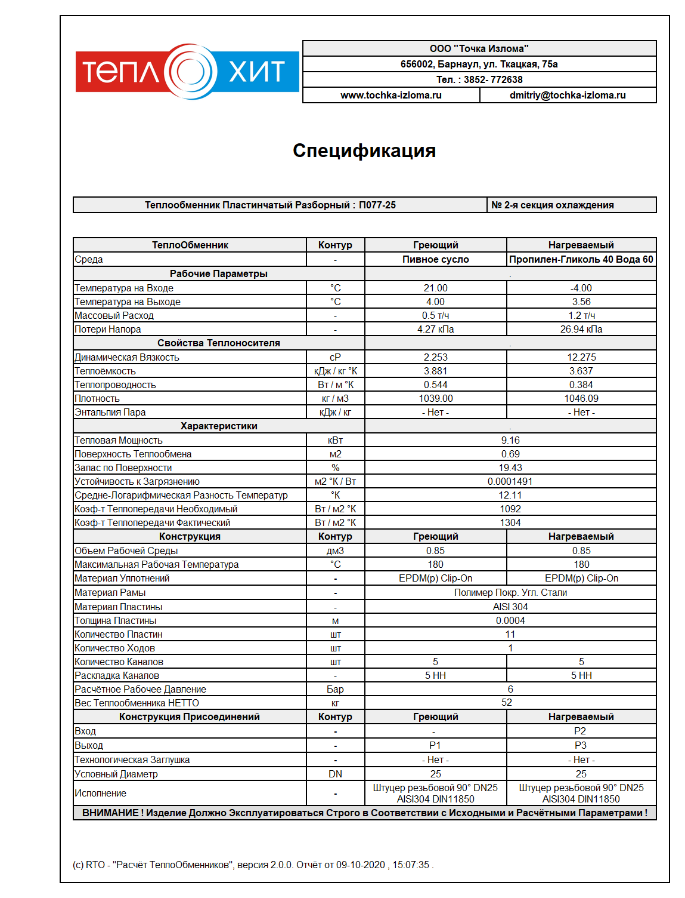
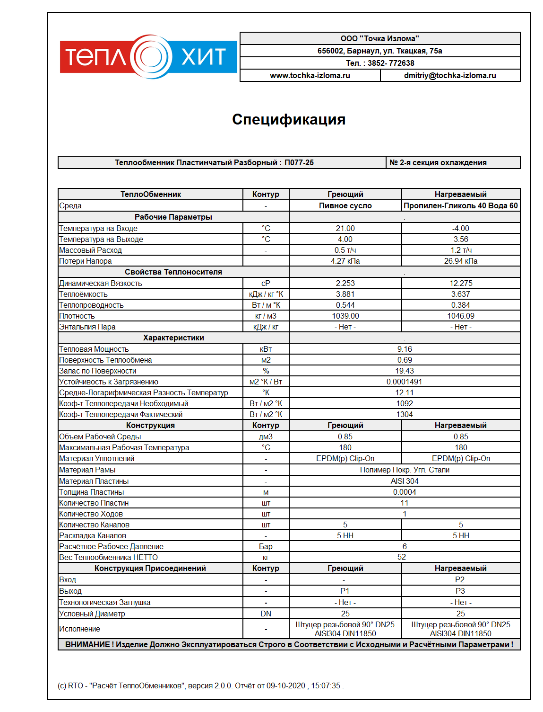

МКД
Теплообменник в многоквартиного дома - обязательный элемент системы отопления и горячего водоснабжения.
Где располагаются
Теплообменники располагаются в индивидуальном тепловом пункте в подвале жилого дома или
котельной квартала многоквартирных домов.
Примеры теплообменников в многоквартирных домах России
-

Теплообменник в котельной квартала многоквартирных домов «Затон-Восточный».
город Уфа
Пароводяной теплообменник мощностью 2 Гкал подает теплоноситель в жилые дома.
-
Теплообменники в жилом доме 12 этажей в г. Тимашевск
город Тимашевск
2 теплообменника: для системы гвс, для системы отопления.
Расчёт теплообменника для многоквартиного дома
Расход по нагреваемой среде и мощность теплообменника можно рассчитать по точкам водоразбора (обычно, 1-3 на квартиру) в доме (каждая имеет стандартные нормы расхода) для
теплообменника ГВС, и по площади отапливаемых помещений для теплообменника системы отопления.
Инженер по расчёту теплообменного оборудования подготавливает расчёт теплообменника в течение 30 минут. В расчёте
указаны все технические характеристики, в том числе те, которые соответствуют техническим условиям жилого дома. Также указана цена и срок поставки теплообменного аппарата.
Как выглядит расчёт теплообменника?
 
Рабочее давления теплообменника в мкд : ? бар (? атмосфер)
Потери давления теплообменника составляют : ? атмосфер
горячая вода в многоквартирном доме
отопление многоквартирного жилого дома
замена теплообменника в доме
Как отремонтировать и провести сервис теплообменника в МКД?
По назначению можно разделить на гвс и отопление.

Рабочее давления теплообменника в мкд : ? бар (? атмосфер)
Потери давления теплообменника составляют : ? атмосфер
горячая вода в многоквартирном доме
отопление многоквартирного жилого дома
замена теплообменника в доме
Как отремонтировать и провести сервис теплообменника в МКД?
По назначению можно разделить на гвс и отопление.